Introduction to BentoBox
Nicole Kramer, Eric S. Davis, Craig Wenger, Sarah Parker, Erika Deoudes, Douglas H. Phanstiel
2021-07-26
Source:vignettes/introduction_to_bentobox.Rmd
introduction_to_bentobox.RmdOverview

BentoBox is a coordinate-based, genomic visualization package for R. Using grid graphics, BentoBox empowers users to programatically and flexibly generate multi-panel figures. Tailored for genomics for a variety of genomic assemblies, BentoBox allows users to visualize large, complex genomic datasets while providing exquisite control over the arrangement of plots.
BentoBox functions can be grouped into the following categories:
- Page layout functions:
Functions for creating BentoBox page layouts, drawing, showing, and hiding guides, as well as placing plots on the page.
- Reading functions:
Functions for quickly reading in large biological datasets.
- Plotting functions:
Contains genomic plotting functions, functions for placing ggplots and base plots, as well as functions for drawing simple shapes.
- Annotation functions:
Enables users to add annotations to their plots, such as legends, axes, and scales.
- Meta functions:
Functions that display BentoBox properties or operate on other BentoBox functions, or constructors for BentoBox objects.
This vignette provides a best-practices guide for utilizing BentoBox. It begins with a Quick Start section that outlines usage examples for reading in and plotting the most commonly used genomic data. Then the following sections explore how BentoBox works in more detail, highlighting helpful topics that showcase the capabilities of BentoBox. For in-depth demonstrations of BentoBox’s key features, see the additional articles. For detailed usage of each function, see the function-specific reference examples with ?function() (e.g. ?bb_plotPairs()).
All the data included in this vignette can be found in the supplementary package BentoBoxData.
Quick Start
Reading data
BentoBox handles a wide array of genomic data types in various formats and file types. Not only does it work with data.frames, data.tables, tibbles, and Bioconductor GRanges and GInteractions objects, but it can also read in common genomic file types like BED, BEDPE, bigWig, and .hic files. While files can be read directly into BentoBox plotting functions, BentoBox also provides functions for reading in these large genomic data sets to work with them within the R environment:
-
bb_readBigwig(): Read in entire bigWig files, or read in specific genomic regions or strands of bigWig data.
wholeFile <- bb_readBigwig("/path/to/bigWig")
region <- bb_readBigwig("/path/to/bigWig",
chrom = "chr1",
chromstart = 1000000, chromend = 2000000
)
regionPlus <- bb_readBigwig("/path/to/bigWig",
chrom = "chr1",
chromstart = 1000000, chromend = 2000000,
strand = "+"
)-
bb_readHic(): Read in genomic regions of .hic files with various data resolutions and normalizations.
chrom <- bb_readHic("/path/to/hic",
chrom = "chr1",
resolution = 250000, res_scale = "BP", norm = "NONE"
)
chromRegion <- bb_readHic("/path/to/hic",
chrom = "chr1",
chromstart = 1000000, chromend = 2000000,
assembly = "hg19",
resolution = 10000, res_scale = "BP", norm = "KR"
)
twoChroms <- bb_readHic("/path/to/hic",
chrom = "chr1", altchrom = "chr2",
resolution = 250000, res_scale = "BP"
)For other filetypes, we recommend reading in files with data.table or rtracklayer.
library(data.table)
data <- data.table::fread("/path/to/file")
library(rtracklayer)
data <- rtracklayer::import(con = "/path/to/file", format = "fileFormat")Quick plotting
BentoBox plotting functions contain 4 types of arguments:
Data reading argument (
data)Genomic locus arguments (
chrom,chromstart,chromend,assembly)Placement arguments (
x,y,width,height,just,default.units, …) that define where each plot resides on abb_pageAttribute arguments that affect the data being plotted or the style of the plot (
norm,fill,fontcolor, …) that vary between functions
The quickest way to plot data is to omit the placement arguments. This will generate a BentoBox plot that fills up the entire graphics window and cannot be annotated. These plots are only meant to be used for quick genomic data inspection and not as final BentoBox plots. The only arguments that are required are the data arguments and locus arguments. The examples below show how to quickly plot different types of genomic data with plot defaults and included data types. To use your own data, replace the data argument with either a path to the file or an R object as described above.
Hi-C matrices
## Load BentoBox
library(BentoBox)
## Load example Hi-C data
library(BentoBoxData)
data("IMR90_HiC_10kb")
## Quick plot Hi-C data
bb_plotHicSquare(
data = IMR90_HiC_10kb,
chrom = "chr21", chromstart = 28000000, chromend = 30300000,
assembly = "hg19"
)
Signal tracks
## Load BentoBox
library(BentoBox)
## Load example signal data
library(BentoBoxData)
data("IMR90_ChIP_H3K27ac_signal")
## Quick plot signal data
bb_plotSignal(
data = IMR90_ChIP_H3K27ac_signal,
chrom = "chr21", chromstart = 28000000, chromend = 30300000,
assembly = "hg19"
)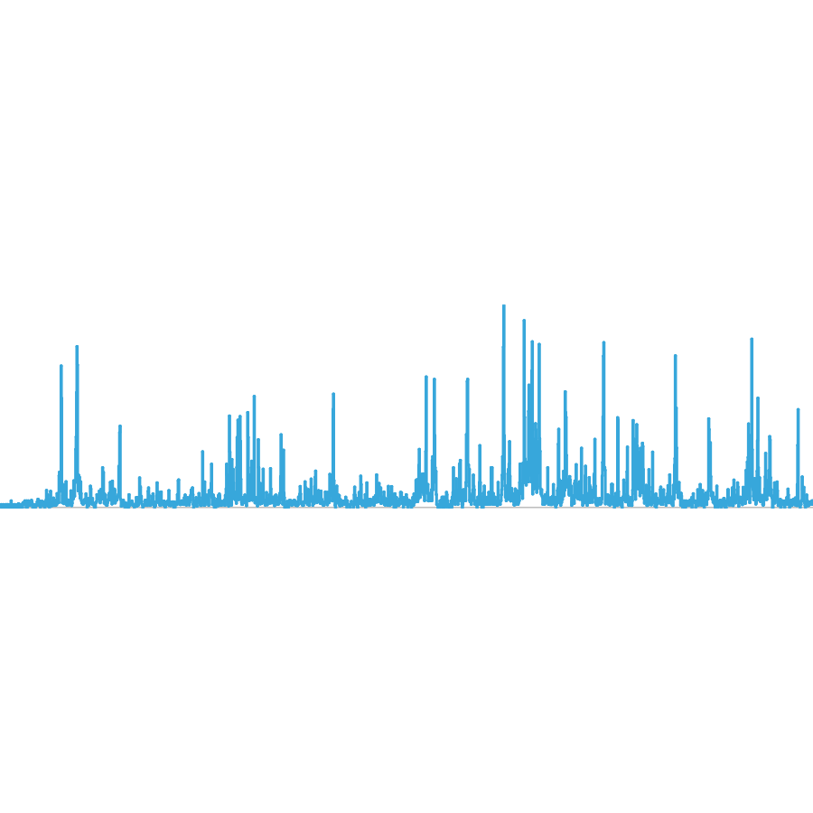
Gene tracks
## Load BentoBox
library(BentoBox)
## Load hg19 genomic annotation packages
library(TxDb.Hsapiens.UCSC.hg19.knownGene)
library(org.Hs.eg.db)
## Quick plot genes
bb_plotGenes(
assembly = "hg19",
chrom = "chr21", chromstart = 28000000, chromend = 30300000
)
GWAS Manhattan plots
## Load BentoBox
library(BentoBox)
## Load hg19 genomic annotation packages
library(TxDb.Hsapiens.UCSC.hg19.knownGene)
## Load example GWAS data
library(BentoBoxData)
data("hg19_insulin_GWAS")
## Quick plot GWAS data
bb_plotManhattan(
data = hg19_insulin_GWAS,
assembly = "hg19",
fill = c("steel blue", "grey"),
ymax = 1.1, cex = 0.20
)
Plotting and annotating on the BentoBox page
To build complex, multi-panel BentoBox figures with annotations, we must:
- Create a
BentoBoxcoordinate page withbb_pageCreate().
bb_pageCreate(width = 3.25, height = 3.25, default.units = "inches")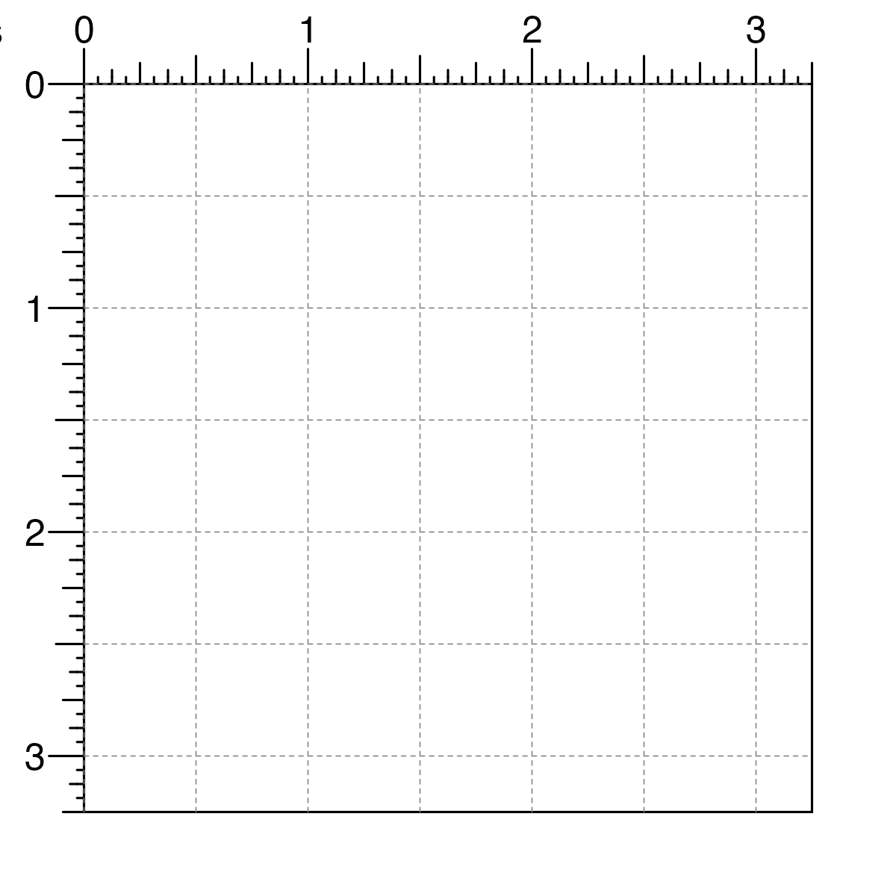
- Provide values for the placement arguments (
x,y,width,height,just,default.units) in plotting functions and save the output of the plotting function.
data("IMR90_HiC_10kb")
hicPlot <- bb_plotHicSquare(
data = IMR90_HiC_10kb,
chrom = "chr21", chromstart = 28000000, chromend = 30300000,
assembly = "hg19",
x = 0.25, y = 0.25, width = 2.5, height = 2.5, default.units = "inches"
)
- Annotate
BentoBoxplot objects by passing them into theplotargument of annotation functions.
bb_annoHeatmapLegend(
plot = hicPlot,
x = 2.85, y = 0.25, width = 0.1, height = 1.25, default.units = "inches"
)
bb_annoGenomeLabel(
plot = hicPlot,
x = 0.25, y = 2.75, width = 2.5, height = 0.25, default.units = "inches"
)
For more information about how to place plots and annotations on a BentoBox page, check out the section Working with plot objects.
Exporting plots
When a BentoBox plot is ready to be saved and exported, we can first remove all page guides that were made with bb_pageCreate():

We can then either use the Export toggle in the RStudio plot panel, or save the plot within our R code as follows:
pdf(width = 3.25, height = 3.25)
bb_pageCreate(width = 3.25, height = 3.25, default.units = "inches")
data("IMR90_HiC_10kb")
hicPlot <- bb_plotHicSquare(
data = IMR90_HiC_10kb,
chrom = "chr21", chromstart = 28000000, chromend = 30300000,
assembly = "hg19",
x = 0.25, y = 0.25, width = 2.5, height = 2.5, default.units = "inches"
)
bb_annoHeatmapLegend(
plot = hicPlot,
x = 2.85, y = 0.25, width = 0.1, height = 1.25, default.units = "inches"
)
bb_annoGenomeLabel(
plot = hicPlot,
x = 0.25, y = 2.75, width = 2.5, height = 0.25, default.units = "inches"
)
bb_pageGuideHide()
dev.off()Plotting multi-omic data
BentoBox makes it easy to create reproducible, publication-quality figures from multi-omic data. Since each plot can be placed in exactly the desired location, users can stack multiple types of genomic data so that their axes and data are correctly aligned. In this section we will show some examples of plotting multi-omic data and how the bb_params object and “below” y-coordinate can facilitate this process.
In the following example, we plot the same genomic region (i.e. chr21:28000000-30300000) represented in Hi-C data, loop annotations, signal track data, GWAS data, all along a common gene track and genome label axis:
## Load example data
library(BentoBoxData)
data("IMR90_HiC_10kb")
data("IMR90_DNAloops_pairs")
data("IMR90_ChIP_H3K27ac_signal")
data("hg19_insulin_GWAS")
## Create a BentoBox page
bb_pageCreate(
width = 3, height = 5, default.units = "inches",
showGuides = FALSE, xgrid = 0, ygrid = 0
)
## Plot Hi-C data in region
bb_plotHicSquare(
data = IMR90_HiC_10kb,
chrom = "chr21", chromstart = 28000000, chromend = 30300000,
assembly = "hg19",
x = 0.5, y = 0.5, width = 2, height = 2,
just = c("left", "top"), default.units = "inches"
)
## Plot loop annotations
bb_plotPairsArches(
data = IMR90_DNAloops_pairs,
chrom = "chr21", chromstart = 28000000, chromend = 30300000,
assembly = "hg19",
x = 0.5, y = 2.5, width = 2, height = 0.25,
just = c("left", "top"), default.units = "inches",
fill = "black", linecolor = "black", flip = TRUE
)
## Plot signal track data
bb_plotSignal(
data = IMR90_ChIP_H3K27ac_signal,
chrom = "chr21", chromstart = 28000000, chromend = 30300000,
assembly = "hg19",
x = 0.5, y = 2.75, width = 2, height = 0.5,
just = c("left", "top"), default.units = "inches"
)
## Plot GWAS data
bb_plotManhattan(
data = hg19_insulin_GWAS,
chrom = "chr21", chromstart = 28000000, chromend = 30300000,
assembly = "hg19",
ymax = 1.1, cex = 0.20,
x = 0.5, y = 3.5, width = 2, height = 0.5,
just = c("left", "top"), default.units = "inches"
)
## Plot gene track
library(TxDb.Hsapiens.UCSC.hg19.knownGene)
library(org.Hs.eg.db)
bb_plotGenes(
chrom = "chr21", chromstart = 28000000, chromend = 30300000,
assembly = "hg19",
x = 0.5, y = 4, width = 2, height = 0.5,
just = c("left", "top"), default.units = "inches"
)
## Plot genome label
bb_plotGenomeLabel(
chrom = "chr21", chromstart = 28000000, chromend = 30300000,
assembly = "hg19",
x = 0.5, y = 4.5, length = 2, scale = "Mb",
just = c("left", "top"), default.units = "inches"
)
Using the bb_params object
The bb_params() function creates a bb_params object that can contain any argument from BentoBox functions.
We can recreate and simplify the multi-omic plot above by saving the genomic region, left-based x-coordinate, and width into a bb_params object:
params <- bb_params(
chrom = "chr21", chromstart = 28000000, chromend = 30300000,
assembly = "hg19",
x = 0.5, just = c("left", "top"),
width = 2, length = 2, default.units = "inches"
)Since these values are the same for each of the functions we are using to build our multi-omic figure, we can now pass the bb_params object into our functions so we don’t need to write the same parameters over and over again:
## Load example data
data("IMR90_HiC_10kb")
data("IMR90_DNAloops_pairs")
data("IMR90_ChIP_H3K27ac_signal")
data("hg19_insulin_GWAS")
## Create a BentoBox page
bb_pageCreate(
width = 3, height = 5, default.units = "inches",
showGuides = FALSE, xgrid = 0, ygrid = 0
)
## Plot Hi-C data in region
bb_plotHicSquare(
data = IMR90_HiC_10kb,
params = params,
y = 0.5, height = 2
)
## Plot loop annotations
bb_plotPairsArches(
data = IMR90_DNAloops_pairs,
params = params,
y = 2.5, height = 0.25,
fill = "black", linecolor = "black", flip = TRUE
)
## Plot signal track data
bb_plotSignal(
data = IMR90_ChIP_H3K27ac_signal,
params = params,
y = 2.75, height = 0.5
)
## Plot GWAS data
bb_plotManhattan(
data = hg19_insulin_GWAS,
params = params,
ymax = 1.1, cex = 0.20,
y = 3.5, height = 0.5
)
## Plot gene track
library(TxDb.Hsapiens.UCSC.hg19.knownGene)
library(org.Hs.eg.db)
bb_plotGenes(
params = params,
y = 4, height = 0.5
)
## Plot genome label
bb_plotGenomeLabel(
params = params,
y = 4.5, scale = "Mb"
)
The bb_params object also simplifies the code for making complex multi-omic figures when we want to change the genomic region of our plots. If we want to change the region for the figure above, we can simply put it into the bb_params object and re-run the code to generate the figure:
params <- bb_params(
chrom = "chr21", chromstart = 29000000, chromend = 30000000,
assembly = "hg19",
x = 0.5, just = c("left", "top"),
width = 2, length = 2, default.units = "inches"
)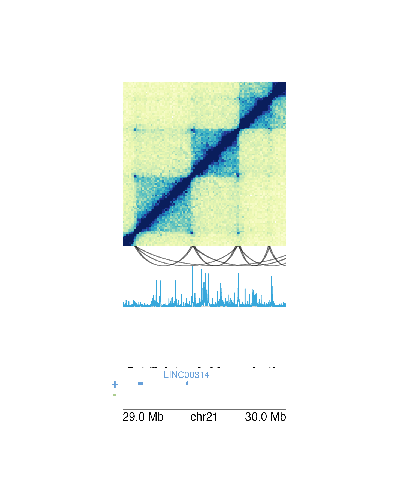
Alternatively, if we want to plot around a particular gene rather than a genomic region we can use bb_params() to specify gene and geneBuffer. If geneBuffer is not included, the default buffer adds (gene length) / 2 base pairs to the ends of the gene coordinates.
params <- bb_params(
gene = "LINC00113", geneBuffer = 100000, assembly = "hg19",
x = 0.5, just = c("left", "top"),
width = 2, length = 2, default.units = "inches"
)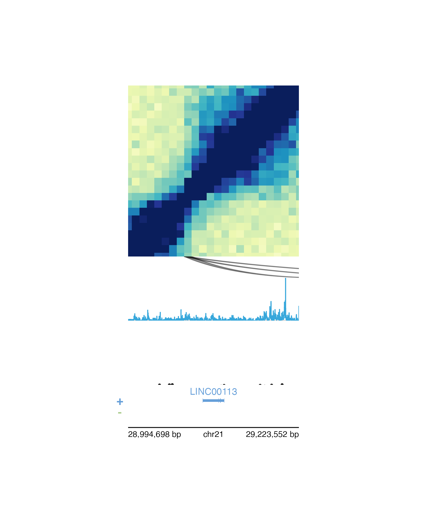
The “below” y-coordinate
Since multi-omic plots often involve vertical stacking, the placement of multi-omic plots can be facilitated with the “below” y-coordinate. Rather than providing a numeric value or unit object to the y parameter in plotting functions, we can place a plot below the previously drawn BentoBox plot with a character value consisting of the distance below the last plot, in page units, and “b”. For example, on a page made in inches, y = "0.1b" will place a plot 0.1 inches below the last drawn plot.
We can further simplify the placement code of our multi-omic figure above by using the “below” y-coordinate to easily stack our plots:
## Load example data
data("IMR90_HiC_10kb")
data("IMR90_DNAloops_pairs")
data("IMR90_ChIP_H3K27ac_signal")
data("hg19_insulin_GWAS")
## bb_params
params <- bb_params(
chrom = "chr21", chromstart = 28000000, chromend = 30300000,
assembly = "hg19",
x = 0.5, just = c("left", "top"),
width = 2, length = 2, default.units = "inches"
)
## Create a BentoBox page
bb_pageCreate(
width = 3, height = 5, default.units = "inches",
showGuides = FALSE, xgrid = 0, ygrid = 0
)
## Plot Hi-C data in region
bb_plotHicSquare(
data = IMR90_HiC_10kb,
params = params,
y = 0.5, height = 2
)
## Plot loop annotations
bb_plotPairsArches(
data = IMR90_DNAloops_pairs,
params = params,
y = "0b",
height = 0.25,
fill = "black", linecolor = "black", flip = TRUE
)
## Plot signal track data
bb_plotSignal(
data = IMR90_ChIP_H3K27ac_signal,
params = params,
y = "0b",
height = 0.5
)
## Plot GWAS data
bb_plotManhattan(
data = hg19_insulin_GWAS,
params = params,
ymax = 1.1, cex = 0.20,
y = "0.25b",
height = 0.5
)
## Plot gene track
library(TxDb.Hsapiens.UCSC.hg19.knownGene)
library(org.Hs.eg.db)
bb_plotGenes(
params = params,
y = "0b",
height = 0.5
)
## Plot genome label
bb_plotGenomeLabel(
params = params,
y = "0b",
scale = "Mb"
)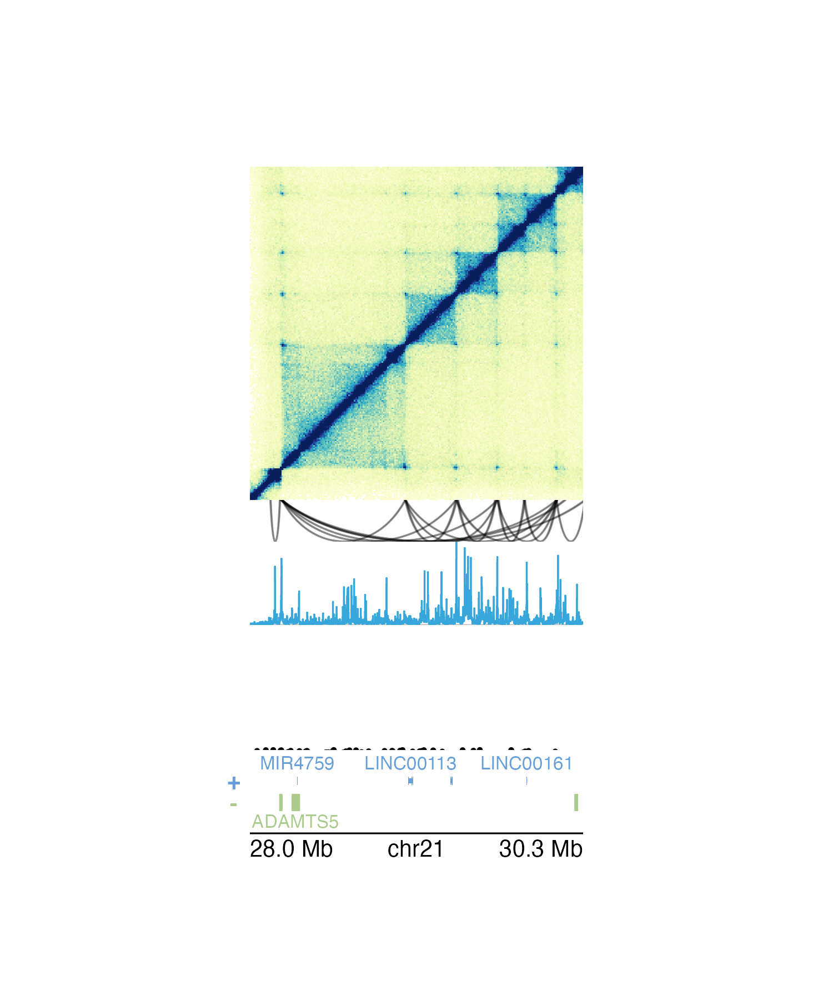
Plotting and comparing multiple signal tracks
In many multi-omic visualizations, multiple signal tracks are often aligned and stacked to compare different kinds of signal data and/or signals from different samples. BentoBox does not normalize signal data based on variables like read depth, but it is possible to scale BentoBox signal plots to the same y-axis.
To determine the appropriate y-axis range, we first must get the maximum signal score from all of our datasets to be compared:
library(BentoBoxData)
data("IMR90_ChIP_H3K27ac_signal")
data("GM12878_ChIP_H3K27ac_signal")
maxScore <- max(c(IMR90_ChIP_H3K27ac_signal$score,
GM12878_ChIP_H3K27ac_signal$score))
print(maxScore)
#> [1] 40.91454In each of our signal plotting calls, we will then use the range parameter to set the range of both our y-axes to c(0, maxScore). Here we can do this with our bb_params object:
params <- bb_params(
chrom = "chr21",
chromstart = 28000000, chromend = 30300000,
assembly = "hg19",
range = c(0, maxScore)
)We are now ready to plot, align, and compare our signal plots along the genomic x-axis and the score y-axis:
## Create a page
bb_pageCreate(width = 7.5, height = 2.1, default.units = "inches",
showGuides = FALSE, xgrid = 0, ygrid = 0)
## Plot and place signal plots
signal1 <- bb_plotSignal(
data = IMR90_ChIP_H3K27ac_signal, params = params,
x = 0.5, y = 0.25, width = 6.5, height = 0.65,
just = c("left", "top"), default.units = "inches"
)
signal2 <- bb_plotSignal(
data = GM12878_ChIP_H3K27ac_signal, params = params,
linecolor = "#7ecdbb",
x = 0.5, y = 1, width = 6.5, height = 0.65,
just = c("left", "top"), default.units = "inches"
)
## Plot genome label
bb_plotGenomeLabel(
chrom = "chr21",
chromstart = 28000000, chromend = 30300000,
assembly = "hg19",
x = 0.5, y = 1.68, length = 6.5,
default.units = "inches"
)
## Add text labels
bb_plotText(
label = "IMR90", fonsize = 10, fontcolor = "#37a7db",
x = 0.5, y = 0.25, just = c("left", "top"),
default.units = "inches"
)
bb_plotText(
label = "GM12878", fonsize = 10, fontcolor = "#7ecdbb",
x = 0.5, y = 1, just = c("left", "top"),
default.units = "inches"
)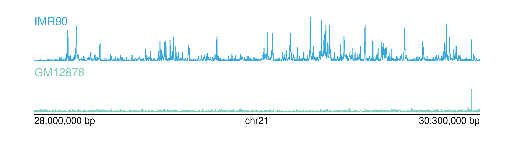
Bioconductor integration
BentoBox is designed to be flexibly compatible with typical Bioconductor classes of genomic data and libraries to easily integrate genomic data analysis and visualization. In addition to handling various genomic file types and R objects, many BentoBox functions can also handle GRanges objects as input data. Furthermore, BentoBox does not hard-code any genomic assemblies and can utilize TxDb, OrgDb, and BSgenome objects for various genomic annotations, including gene and transcript structures and names, chromosome sizes, and nucleotide sequences. For standard genomic assemblies (i.e. hg19, hg38, mm10), BentoBox uses a set of default packages that can be displayed by calling bb_defaultPackages():
bb_defaultPackages("hg38")
#> 'data.frame': 1 obs. of 6 variables:
#> $ Genome : chr "hg38"
#> $ TxDb : chr "TxDb.Hsapiens.UCSC.hg38.knownGene"
#> $ OrgDb : chr "org.Hs.eg.db"
#> $ gene.id.column: chr "ENTREZID"
#> $ display.column: chr "SYMBOL"
#> $ BSgenome : chr "BSgenome.Hsapiens.UCSC.hg38"
bb_defaultPackages("hg19")
#> 'data.frame': 1 obs. of 6 variables:
#> $ Genome : chr "hg19"
#> $ TxDb : chr "TxDb.Hsapiens.UCSC.hg19.knownGene"
#> $ OrgDb : chr "org.Hs.eg.db"
#> $ gene.id.column: chr "ENTREZID"
#> $ display.column: chr "SYMBOL"
#> $ BSgenome : chr "BSgenome.Hsapiens.UCSC.hg19"
bb_defaultPackages("mm10")
#> 'data.frame': 1 obs. of 6 variables:
#> $ Genome : chr "mm10"
#> $ TxDb : chr "TxDb.Mmusculus.UCSC.mm10.knownGene"
#> $ OrgDb : chr "org.Mm.eg.db"
#> $ gene.id.column: chr "ENTREZID"
#> $ display.column: chr "SYMBOL"
#> $ BSgenome : chr "BSgenome.Mmusculus.UCSC.mm10"To see which assemblies have defaults within BentoBox, call bb_genomes():
bb_genomes()
#> bosTau8
#> bosTau9
#> canFam3
#> ce6
#> ce11
#> danRer10
#> danRer11
#> dm3
#> dm6
#> galGal4
#> galGal5
#> galGal6
#> hg18
#> hg19
#> hg38
#> mm9
#> mm10
#> rheMac3
#> rheMac8
#> rheMac10
#> panTro5
#> panTro6
#> rn4
#> rn5
#> rn6
#> sacCer2
#> sacCer3
#> susScr3
#> susScr11BentoBox functions default to an “hg38” assembly, but can be customized with any of the other genomic assemblies included or a bb_assembly object. To create custom genomic assemblies and combinations of TxDb, orgDb, and BSgenome packages for use in BentoBox functions, we can use the bb_assembly() constructor. For example, we can create our own TxDb from the current human Ensembl release:
library(GenomicFeatures)
TxDb.Hsapiens.Ensembl.GrCh38.103 <- makeTxDbFromEnsembl(
organism =
"Homo sapiens"
)We can now create a new bb_assembly with this TxDb and combinations of other Bioconductor packages. The Genome parameter can be any string to name or describe this assembly. Since the TxDb is now from ENSEMBL, we will change the gene.id field to "ENSEMBL" to map gene IDs and symbols between our TxDb and orgDb objects. Most gene ID types can be found by calling AnnotationDbi::keytypes() on an orgDb.
Ensembl38 <- bb_assembly(
Genome = "Ensembl.GRCh38.103",
TxDb = TxDb.Hsapiens.Ensembl.GrCh38.103,
OrgDb = "org.Hs.eg.db",
BSgenome = "BSgenome.Hsapiens.NCBI.GRCh38",
gene.id = "ENSEMBL", display.column = "SYMBOL"
)This bb_assembly object can now be easily passed into BentoBox functions through the assembly parameter.
Incorporating ggplots
In addition to its numerous genomic functions, BentoBox can size and place ggplots within a BentoBox layout. Rather than arranging ggplots in a relative manner, BentoBox can make and place ggplots in absolute sizes and locations. This makes it simple and intuitive to make complex ggplot arrangements beyond a basic grid-style layout.
For example, let’s say we wanted to make a complex multi-panel ggplot about COVID-19 data consisting of the following plots:
- A United States map depicting COVID-19 cases:
library(ggplot2)
library(scales)
data("COVID_USA_cases")
US_map <- ggplot(COVID_USA_cases, aes(long, lat, group = group)) +
theme_void() +
geom_polygon(aes(fill = cases_100K), color = "white", size = 0.3) +
scale_fill_distiller(
palette = "YlGnBu", direction = 1,
labels = label_number(suffix = "", scale = 1e-3, accuracy = 1)
) +
theme(
legend.position = "left",
legend.justification = c(0.5, 0.95),
legend.title = element_blank(),
legend.text = element_text(size = 7),
legend.key.width = unit(0.3, "cm"),
legend.key.height = unit(0.4, "cm"),
plot.title = element_text(
hjust = 0, vjust = -1,
family = "ProximaNova", face = "bold",
size = 12
),
plot.title.position = "plot"
) +
labs(title = "Thousands of COVID-19 Cases per 100,000 People") +
coord_fixed(1.3)
print(US_map)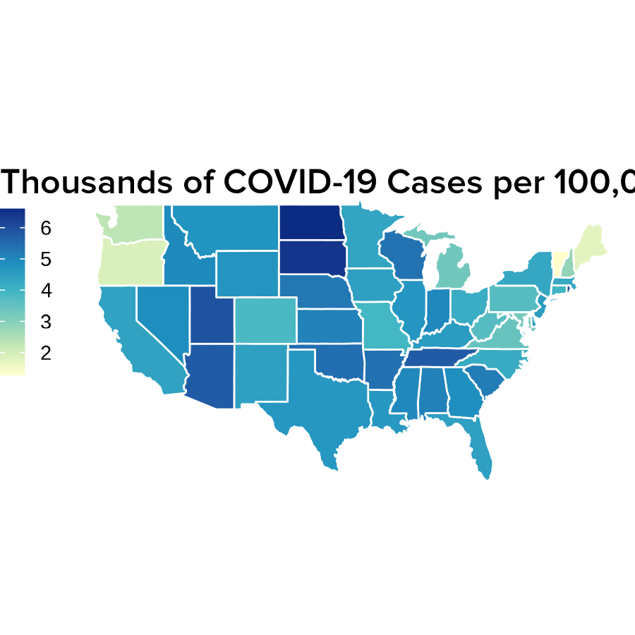
- Line plots showing the accumulation of COVID-19 cases over time:
data("COVID_NY_FL_tracking")
# Format y-labels
ylabels <- seq(0, 2000000, by = 500000) / 1e6
ylabels[c(3, 5)] <- round(ylabels[c(3, 5)], digits = 0)
ylabels[c(2, 4)] <- round(ylabels[c(2, 4)], digits = 1)
ylabels[5] <- paste0(ylabels[5], "M cases")
ylabels[1] <- ""
bb_CasesNY <- COVID_NY_FL_tracking[COVID_NY_FL_tracking$state == "new york", ]
bb_CasesNYpoly <- rbind(
bb_CasesNY,
data.frame(
"date" = as.Date("2021-03-07"),
"state" = "new york",
"caseIncrease" = -1 * sum(bb_CasesNY$caseIncrease)
)
)
cases_NYline <- ggplot(
bb_CasesNY,
aes(x = date, y = cumsum(caseIncrease))
) +
geom_polygon(data = bb_CasesNYpoly, fill = "#B8E6E6") +
scale_x_date(
labels = date_format("%b '%y"),
breaks = as.Date(c("2020-05-01", "2020-09-01", "2021-01-01")),
limits = as.Date(c("2020-01-29", "2021-03-07")),
expand = c(0, 0)
) +
scale_y_continuous(labels = ylabels, position = "right", expand = c(0, 0)) +
geom_hline(
yintercept = c(500000, 1000000, 1500000, 2000000),
color = "white", linetype = "dashed", size = 0.3
) +
coord_cartesian(ylim = c(0, 2000000)) +
theme(
panel.background = element_rect(fill = "transparent", color = NA),
text = element_text(family = "ProximaNova"),
panel.grid = element_blank(),
panel.border = element_blank(),
plot.background = element_rect(fill = "transparent", color = NA),
axis.line.x.bottom = element_blank(),
axis.line.y = element_line(size = 0.1, color = "#8F9BB3"),
axis.text.x = element_text(
size = 7, hjust = 0.5,
margin = margin(t = -10), color = "black"
),
axis.title.x = element_blank(),
axis.ticks.x = element_line(size = 0.2, color = "black"),
axis.title.y = element_blank(),
axis.text.y = element_text(size = 7, color = "black"),
axis.ticks.y = element_blank(),
axis.ticks.length.x.bottom = unit(-0.1, "cm"),
plot.title = element_text(size = 8, hjust = 1),
plot.title.position = "plot"
)
print(cases_NYline)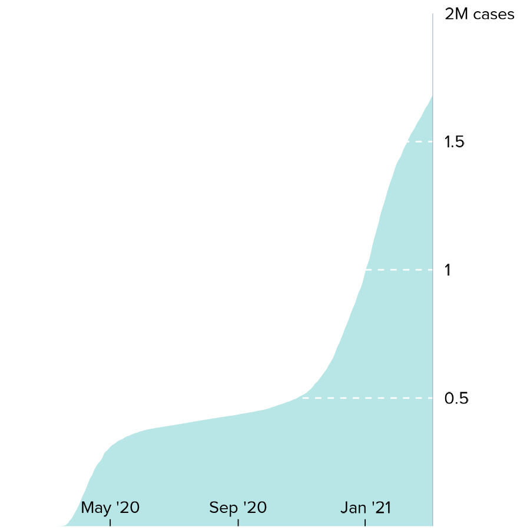
bb_CasesFL <- COVID_NY_FL_tracking[COVID_NY_FL_tracking$state == "florida", ]
bb_CasesFLpoly <- rbind(
bb_CasesFL,
data.frame(
"date" = as.Date("2021-03-07"),
"state" = "florida",
"caseIncrease" = -1 * sum(bb_CasesFL$caseIncrease)
)
)
cases_FLline <- ggplot(
bb_CasesFL,
aes(x = date, y = cumsum(caseIncrease))
) +
geom_polygon(data = bb_CasesFLpoly, fill = "#B8E6E6") +
scale_x_date(
labels = date_format("%b '%y"),
breaks = as.Date(c("2020-05-01", "2020-09-01", "2021-01-01")),
limits = as.Date(c("2020-01-29", "2021-03-07")),
expand = c(0, 0)
) +
scale_y_continuous(labels = ylabels, position = "right", expand = c(0, 0)) +
geom_hline(
yintercept = c(500000, 1000000, 1500000, 2000000),
color = "white", linetype = "dashed", size = 0.3
) +
coord_cartesian(ylim = c(0, 2000000)) +
theme(
panel.background = element_rect(fill = "transparent", color = NA),
plot.background = element_rect(fill = "transparent", color = NA),
text = element_text(family = "ProximaNova"),
panel.grid = element_blank(),
panel.border = element_blank(),
axis.line.x.bottom = element_blank(),
axis.line.y = element_line(size = 0.1, color = "#8F9BB3"),
axis.title = element_blank(),
axis.text.y = element_text(size = 7, color = "black"),
axis.text.x = element_text(
size = 7, hjust = 0.5,
margin = margin(t = -10), color = "black"
),
axis.ticks = element_line(color = "black", size = 0.2),
axis.ticks.y = element_blank(),
axis.ticks.length.x.bottom = unit(-0.1, "cm"),
plot.title = element_text(size = 8, hjust = 1),
plot.title.position = "plot"
)
print(cases_FLline)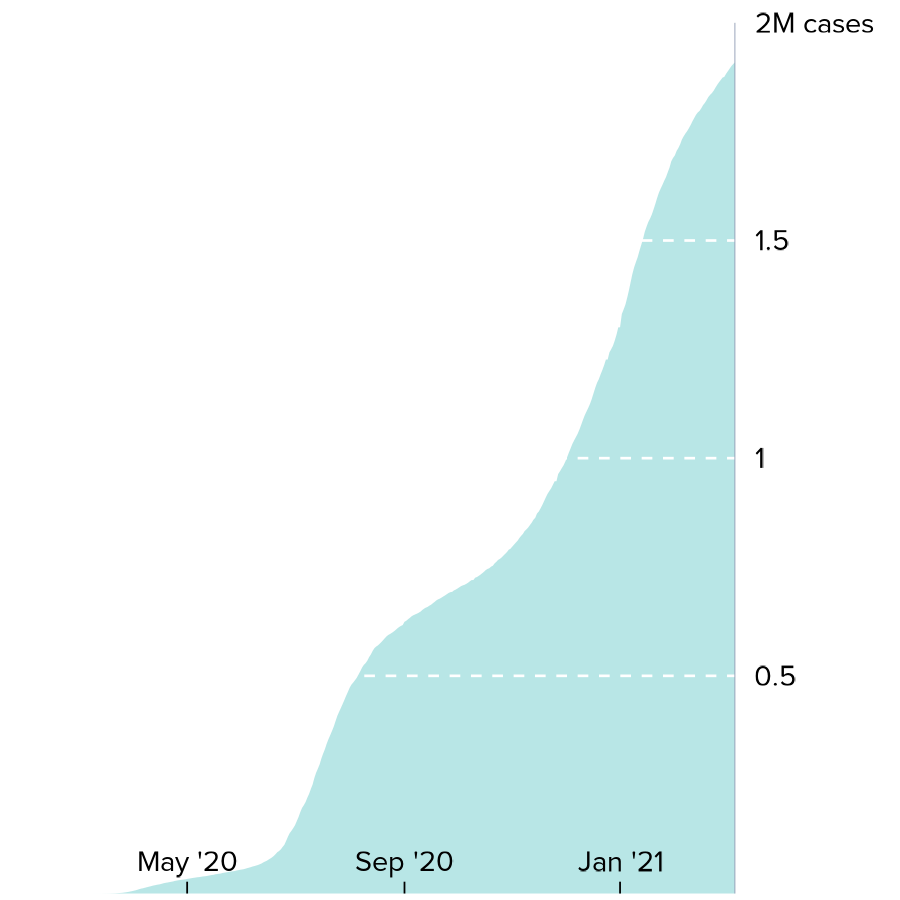
- Pie charts of COVID-19 vaccination status:
data("COVID_NY_FL_vaccines")
vaccines_NYpie <- ggplot(
COVID_NY_FL_vaccines[COVID_NY_FL_vaccines$state == "new york", ],
aes(x = "", y = value, fill = vax_group)
) +
geom_bar(width = 1, stat = "identity") +
theme_void() +
scale_fill_manual(values = c("#FBAA7E", "#F7EEBF", "#FBCB88")) +
coord_polar(theta = "y", start = 2.125, clip = "off") +
geom_text(aes(
x = c(1.9, 2, 1.9),
y = c(1.65e7, 1.3e6, 7.8e6),
label = paste0(percent, "%")
),
size = 2.25, color = "black"
) +
theme(
legend.position = "none",
plot.title = element_text(
hjust = 0.5, vjust = -3.5, size = 10,
family = "ProximaNova", face = "bold"
),
text = element_text(family = "ProximaNova")
) +
labs(title = "New York")
print(vaccines_NYpie)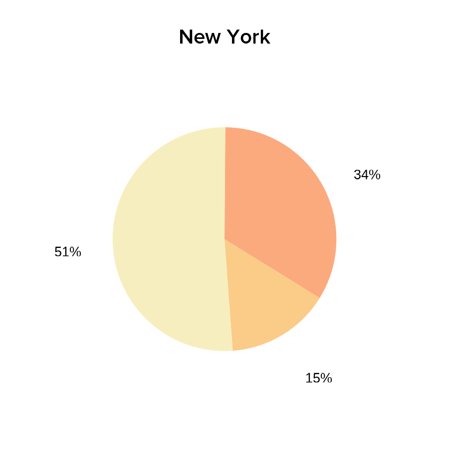
vaccines_FLpie <- ggplot(
COVID_NY_FL_vaccines[COVID_NY_FL_vaccines$state == "florida", ],
aes(x = "", y = value, fill = vax_group)
) +
geom_bar(width = 1, stat = "identity") +
scale_fill_manual(values = c("#FBAA7E", "#F7EEBF", "#FBCB88")) +
theme_void() +
coord_polar(theta = "y", start = pi / 1.78, clip = "off") +
geom_text(aes(
x = c(1.95, 2, 1.9),
y = c(1.9e7, 1.83e6, 9.6e6),
label = paste0(percent, "%")
),
color = "black",
size = 2.25
) +
theme(
legend.position = "none",
plot.title = element_text(
hjust = 0.5, vjust = -4, size = 10,
family = "ProximaNova", face = "bold"
),
text = element_text(family = "ProximaNova")
) +
labs(title = "Florida")
print(vaccines_FLpie)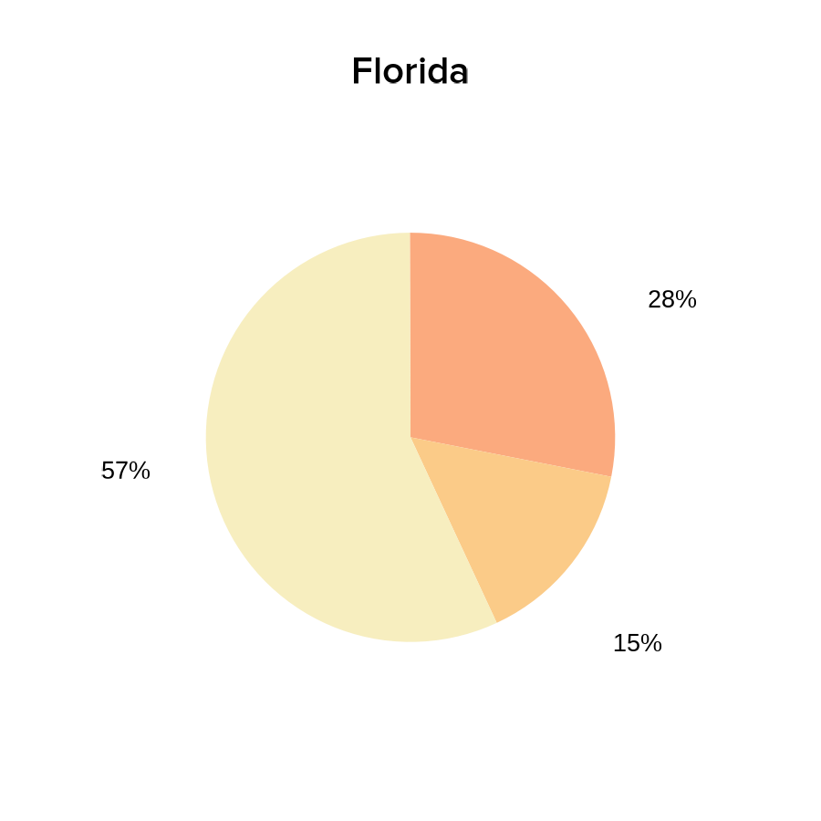
We can now easily overlap and size all these ggplots by passing our saved plot objects into bb_plotGG():
bb_pageCreate(width = 9.5, height = 3.5, default.units = "inches")
bb_plotGG(
plot = US_map,
x = 0.1, y = 0,
width = 6.5, height = 3.5, just = c("left", "top")
)
bb_plotGG(
plot = cases_NYline,
x = 6.25, y = 1.8,
width = 3.025, height = 1.4, just = c("left", "bottom")
)
bb_plotGG(
plot = cases_FLline,
x = 6.25, y = 3.5,
width = 3.025, height = 1.4, just = c("left", "bottom")
)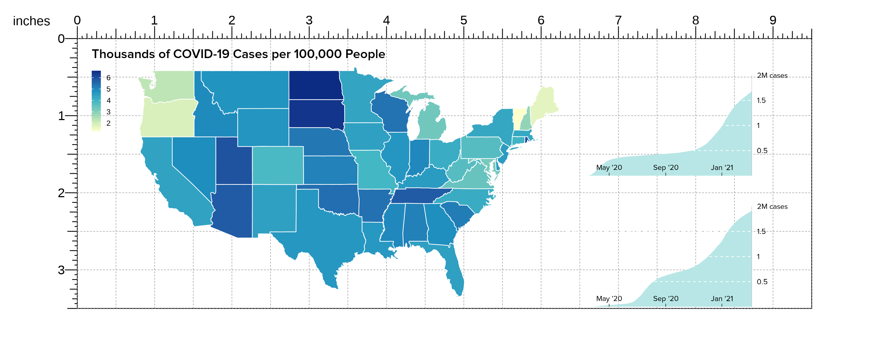
In particular, BentoBox makes it easy to resize and place our pie charts in a layout that overlaps our line plots without it affecting the sizing of the other plots on the page:
bb_plotGG(
plot = vaccines_NYpie,
x = 6.37, y = -0.05,
width = 1.45, height = 1.45, just = c("left", "top")
)
bb_plotGG(
plot = vaccines_FLpie,
x = 6.37, y = 1.67,
width = 1.45, height = 1.45, just = c("left", "top")
)We can also easily add additional elements to further enhance our complex ggplot arrangments, like a precise placement of text labels:
bb_plotText(
label = c("not", "partially", "fully vaccinated"),
fontfamily = "ProximaNova", fontcolor = "black", fontsize = 7,
x = c(6.58, 7.3, 7.435),
y = c(0.74, 1.12, 0.51), just = c("left", "bottom")
)
bb_plotText(
label = c("not", "partially", "fully vaccinated"),
fontfamily = "ProximaNova", fontcolor = "black", fontsize = 7,
x = c(6.58, 7.39, 7.435),
y = c(2.47, 2.75, 2.2), just = c("left", "bottom")
)
bb_plotText(label = paste("Sources: The COVID Tracking Project;",
"Johns Hopkins Center for Civic Impact"),
fontfamily = "ProximaNova", fontcolor = "black",
fontsize = 7, fontface = "italic",
x = 0.15, y = 3.45, just = c("left", "bottom"))We are then left with a complex, precise, and elegant arrangement of ggplots as if we had arranged them together with graphic design software:
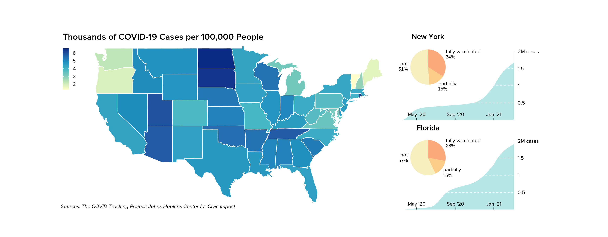
Future Directions
We still have many ideas to add for a second version of BentoBox including, but not limited to: grammar of graphics style plot arguments and plot building, templates, themes, and multi-plotting functions. If you have suggestions for ways we can improve BentoBox, please let us know!
Session Info
sessionInfo()
#> R version 4.1.0 (2021-05-18)
#> Platform: x86_64-apple-darwin17.0 (64-bit)
#> Running under: macOS Big Sur 10.16
#>
#> Matrix products: default
#> BLAS: /Library/Frameworks/R.framework/Versions/4.1/Resources/lib/libRblas.dylib
#> LAPACK: /Library/Frameworks/R.framework/Versions/4.1/Resources/lib/libRlapack.dylib
#>
#> locale:
#> [1] en_US.UTF-8/en_US.UTF-8/en_US.UTF-8/C/en_US.UTF-8/en_US.UTF-8
#>
#> attached base packages:
#> [1] stats4 parallel grid stats graphics grDevices utils
#> [8] datasets methods base
#>
#> other attached packages:
#> [1] scales_1.1.1
#> [2] ggplot2_3.3.5
#> [3] showtext_0.9-2
#> [4] showtextdb_3.0
#> [5] sysfonts_0.8.3
#> [6] org.Hs.eg.db_3.13.0
#> [7] TxDb.Hsapiens.UCSC.hg19.knownGene_3.2.2
#> [8] GenomicFeatures_1.44.0
#> [9] AnnotationDbi_1.54.1
#> [10] Biobase_2.52.0
#> [11] GenomicRanges_1.44.0
#> [12] GenomeInfoDb_1.28.1
#> [13] IRanges_2.26.0
#> [14] S4Vectors_0.30.0
#> [15] BiocGenerics_0.38.0
#> [16] BentoBoxData_0.99.0
#> [17] BentoBox_0.99.2
#>
#> loaded via a namespace (and not attached):
#> [1] colorspace_2.0-2 rjson_0.2.20
#> [3] ellipsis_0.3.2 rprojroot_2.0.2
#> [5] XVector_0.32.0 fs_1.5.0
#> [7] farver_2.1.0 bit64_4.0.5
#> [9] fansi_0.5.0 xml2_1.3.2
#> [11] cachem_1.0.5 knitr_1.33
#> [13] jsonlite_1.7.2 Rsamtools_2.8.0
#> [15] dbplyr_2.1.1 png_0.1-7
#> [17] BiocManager_1.30.16 compiler_4.1.0
#> [19] httr_1.4.2 rvcheck_0.1.8
#> [21] assertthat_0.2.1 Matrix_1.3-4
#> [23] fastmap_1.1.0 htmltools_0.5.1.1
#> [25] prettyunits_1.1.1 tools_4.1.0
#> [27] gtable_0.3.0 glue_1.4.2
#> [29] GenomeInfoDbData_1.2.6 dplyr_1.0.7
#> [31] rappdirs_0.3.3 Rcpp_1.0.7
#> [33] jquerylib_0.1.4 pkgdown_1.6.1
#> [35] vctrs_0.3.8 Biostrings_2.60.1
#> [37] strawr_0.0.8 rtracklayer_1.52.0
#> [39] xfun_0.24 stringr_1.4.0
#> [41] plyranges_1.12.1 lifecycle_1.0.0
#> [43] restfulr_0.0.13 XML_3.99-0.6
#> [45] zlibbioc_1.38.0 ragg_1.1.3
#> [47] hms_1.1.0 MatrixGenerics_1.4.0
#> [49] SummarizedExperiment_1.22.0 RColorBrewer_1.1-2
#> [51] yaml_2.2.1 curl_4.3.2
#> [53] memoise_2.0.0 sass_0.4.0
#> [55] biomaRt_2.48.2 stringi_1.7.3
#> [57] RSQLite_2.2.7 highr_0.9
#> [59] BiocIO_1.2.0 desc_1.3.0
#> [61] filelock_1.0.2 BiocParallel_1.26.1
#> [63] rlang_0.4.11 pkgconfig_2.0.3
#> [65] systemfonts_1.0.2 matrixStats_0.59.0
#> [67] bitops_1.0-7 evaluate_0.14
#> [69] lattice_0.20-44 purrr_0.3.4
#> [71] GenomicAlignments_1.28.0 labeling_0.4.2
#> [73] bit_4.0.4 tidyselect_1.1.1
#> [75] magrittr_2.0.1 R6_2.5.0
#> [77] generics_0.1.0 DelayedArray_0.18.0
#> [79] DBI_1.1.1 pillar_1.6.1
#> [81] withr_2.4.2 KEGGREST_1.32.0
#> [83] RCurl_1.98-1.3 tibble_3.1.3
#> [85] crayon_1.4.1 utf8_1.2.2
#> [87] BiocFileCache_2.0.0 rmarkdown_2.9
#> [89] progress_1.2.2 data.table_1.14.0
#> [91] blob_1.2.1 digest_0.6.27
#> [93] gridGraphics_0.5-1 textshaping_0.3.5
#> [95] munsell_0.5.0 ggplotify_0.0.7
#> [97] bslib_0.2.5.1